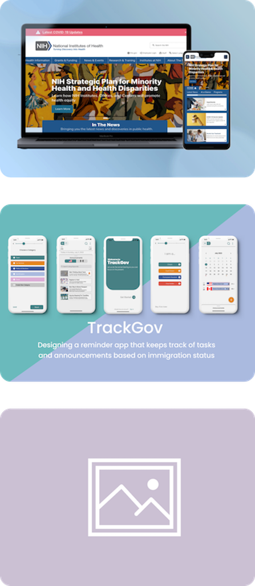

Featured Work

NIH Redesign
Transforming the National Institutes of Health’s (NIH) UI via webpage and mobile
Track Gov
Designing a reminder app that keeps track of important tasks and announcements based on US immigration status
Lone Wolf
Helping solo travelers plan their trip while providing opportunities to connect with other travelers